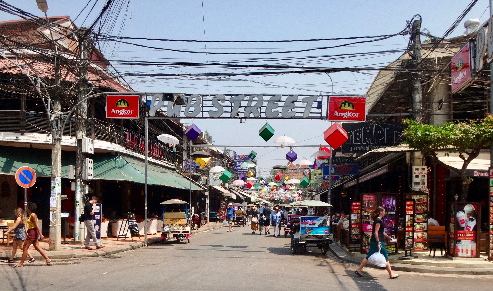

ដងផ្លូវលេខ ៨ ក្នុងកណ្ដាលក្រុងសៀមរាប ក្បែរទន្លេសៀមរាប ចាប់ផ្ដើមពីភោជនីយដ្ឋាន Red Piano (ព្យាណូក្រហម) រហូតដល់ភោជនីយដ្ឋាន Banana Leaf (ស្លឹកចេក) គឺជាផ្លូវដែលគេឲ្យឈ្មោះថា ផាប់ស្ត្រីត មានប្រវែង ១០០ម ។ នៅពេលថ្ងៃ ផាប់ស្ត្រីត ជាកូនផ្លូវធម្មតាមួយមានប្រជាជនធ្វើដំណើរទៅមកដូចផ្លូវឯទៀត ។ ប៉ុន្តែពេលយប់ ផាប់ស្ត្រីតចាប់ផ្តើមរស់ឡើងពោរពេញដោយភ្លើងពណ៌ និង ការច្រៀងរាំកម្សាន្តពីសំណាក់ភ្ញៀវទេសចរដែលទៅសប្បាយក្រោយពីបានទៅទស្សនាតំបន់អង្គរពីពេលថ្ងៃរួច ។
ផ្លូវលេខ ៨ ដំបូងឡើយជាផ្លូវលំមួយមានអាហារដ្ឋានពីរបីប៉ុណ្ណោះ ។ ក្រោយមក មានក្លឹប Angkor What? បើកនៅទីនោះនៅឆ្នាំ១៩៩៨ ហើយនៅឆ្នាំ២០០០ មានភោជនីយដ្ឋាន Singaporean Asian Rooftop (ប្រែថា ដំបូលអាស៊ីសិង្ហបុរី បានបិទទ្វារទៅវិញ) និង ភោជនីយដ្ឋាន Red Piano ។ បន្ទាប់មក មានក្លឹបផ្សេងៗដូចជា Temple Club (ប្រែថាក្លឹបប្រាសាទ) និង Le Tigre de Papier (ប្រែថាខ្លាក្រដាស) ប៉ុន្តែមិនសូវមានទេសចរច្រើនទេ ។ ក្នុងឆ្នាំ ២០០៥ ផ្លូវលេខ៨ ត្រូវគេក្រាលកៅស៊ូត្រឹមត្រូវ ។ បន្ទាប់ពីមានទេសចរស្គាល់សៀមរាបដោយសារភាពយន្តហូលីវូដ Tomb Raider មក ពួកគេក៏នាំគ្នាមកកម្សាន្តនៅខេត្តនេះ ហើយបានផ្តុំគ្នារាំកម្សាន្តតាមក្លឹបនៅផ្លូវនេះ ។ បន្ទាប់មក ផ្លូវលេខ៨ បានជាប់ឈ្មោះជា ផាប់ស្ត្រីតនៅកំឡុងឆ្នាំ ២០០៨ ។
ផាប់ស្ត្រីតមានតូបលក់សត្វល្អិតអាំងជាច្រើនដែលមានឱជារសឆ្ងាញ់ ។ ក្នុងភោជនីយដ្ឋានផ្សេងៗក៏មានលក់សាច់អាំងភ្នំភ្លើងដ៏ឆ្ងាញ់ពិសារ ។ តូបខ្លះមានលក់ការេមអាំង ដែលជាបង្អែមល្បីល្បាញនៅអាស៊ីអាគ្នេយ៍ ។ អ្នកចង់រាំលេងកម្សាន្តតែងនាំគ្នាទៅ កម្សាន្តសប្បាយក្នុង Temple Club ។
© បង្កើត និង តែងដោយ
រចនាបទ & អភិវឌ្ឍដោយ ដើរលេងសៀមរាប